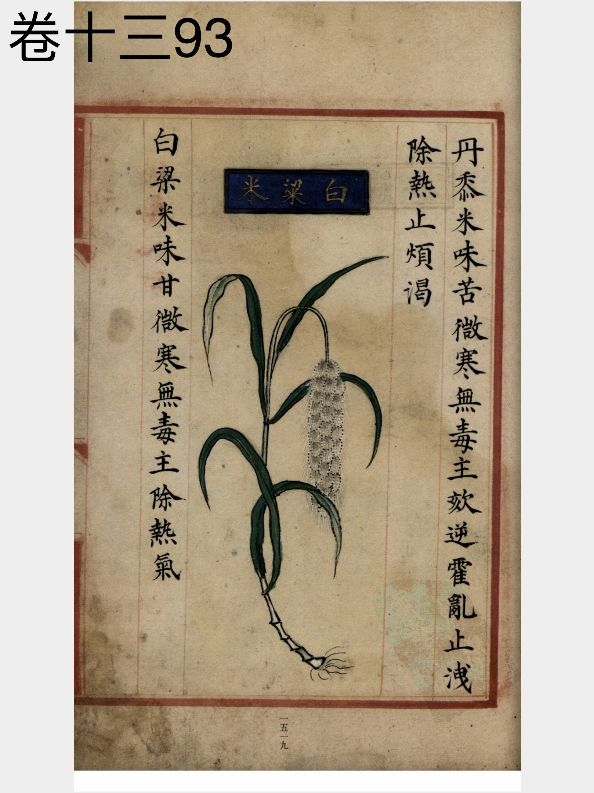

出现篇目
古代记载 《毛诗故训传》
芑，菜也。田一岁曰菑，二岁曰新田，三岁曰畬。宣王能新美天下之士，然后用之。（《毛传》注《采芑》）
芑，白苗也。（《毛传》注《生民》）
《毛诗草木鸟兽虫鱼疏》
芑菜，似苦菜也，茎青白色，摘其叶，白汁出，肥可生食，亦可蒸为茹，青州谓之芑。西河雁门芑尤美，土人恋之不出塞。
《毛诗正义》
正义曰：陆机《疏》云：“采芑，似苦菜也，茎青白色，摘其叶，白汁出，肥可生食，亦可烝为茹。青州人谓之芑，西河、雁门芑尢美。胡人恋之，不出塞。”是也。（《毛诗正义》疏《采芑》）
芑，今之白粱粟，皆好穀也。（《毛诗正义》疏《生民》）
《诗集传》
芑、白梁粟也。（《诗集传》集注《生民》)
芑、苦菜也。青白色。摘其葉有白汁出。肥可生食。亦可蒸爲茹。卽今苦藚菜。宜馬食軍行。采之、人馬皆可食也。（《诗集传》集注《采芑》）
《本草纲目》
弘景曰∶粟，江南西间所种皆是。其粒细于粱，熟舂令白，亦当白粱，呼为白粱粟，或呼为粢米。

<补遗雷公炮制便览>